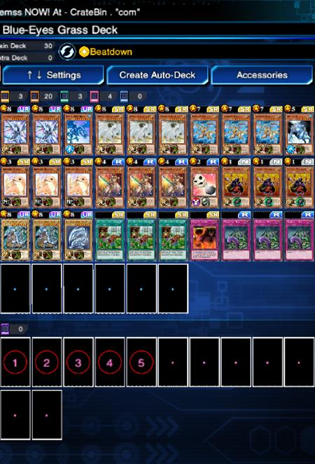
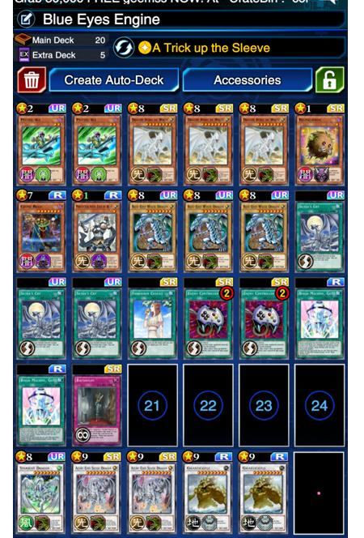

Duelist :
Vklasb
Set Skill :
Beatdown
Date :
December 10
A comment from Vklasb :
Deck Notes: This is my blue-eyes grass deck I made that just got to king of games(KOG) with. This deck relies on using the graveyard effects of arkbrave, kidmodo, dragon of ice, and dragon knight of creation to constantly ss your big dragons.
Combined with the excellent recovery effects of spirit of white, and blue-eyes solid with their backrow removal and monster negation, one can overcome the common tier 1 decks with high sucess rate.
As long as you start with either grass, needlebug nest, merchant, or kidmodo your in good shape and usually won't brick while dumping your deck. The only deck that hard counters this one is silent magician spellbooks. While not impossible to beat, silent magician can negate grass and silent magician lvl 8 is stronger then all your dragons. This is why beatdown and skill successor are so important.
In most cases though you will win against any other deck, even spellbooks and yubel(thanks to blue-eyes solid dragon). Just hope you do not face another grass deck as that messes with your ability to use grass.

Duelist :
Shaka
Set Skill :
A Trick Up the Sleeves
Date :
December 6
A comment from Shaka :
Blue Eyes decks are naturally bricky (almost similar to U.A.) but a "A Trick up the Sleeve" helps a lot with that so that's why that's the skill for this one. I've removed all backrow clearing cards from my initial build and abused Dragon Spirit of White for that, simply because those just made the deck even more prone to brick (I've lost a KoG rank up match at about 30 victories and then all the pain was unleashed due to that). I preferred to run just 2 Psychic Ace's instead of 3 because of the same reason (prevent bricks) and him over Lyla because I find it more flexible than Lyla (which is just for backrow whereas Psychic Ace can deal with both monsters and Spell/Traps).
3 Sylver's Cry is a most (actually my KoG match got decided by top decking one of those) and I felt and I needed some more revival power so I've added a Birthright, which in turn made me to remove TTH (if Birthright gets early destroyed TTH becomes a dead card in the deck). Relinkuriboh is both for some extra draw power and battle destruction protection (the latter coming very handy against Anki attacks for Mask Change searches). 2 Bingo's are both for draw power/consistency (3 is way too much and again the deck bricks as hell) and situational bluffing when no longer needed (actually more than 1 player spent a Cosmic/Galaxy Cyclone on my useless Bingo). 1 Chalice + 2 Enemy Controller to have extra options to deal with against common problems like "Amazoness Swords Woman", "Wiz, Sage Fur Hire" (yes, people are simply not giving up on Fur Hires); obviously Cosmo Brain in mirror matches; and the new cancer after the ban list, which is Destiny Hero Decider on the Masked Heroes deck.

Duelist :
EC| Cloud
Set Skill :
A Trick Up the Sleeves
Date :
December 7
A comment from EC| Cloud :
This deck have a lot of variables, Luster Dragon and Aqua Spirit were the tech, both of them can be searched with Cosmic Brain, LD because Decider and AS for Syncros. Lyla and Destructotron were the back row cleaners, and later used with Cosmic Brain.
Duelist :
Felicia
Set Skill :
A Trick Up the Sleeves
Date :
December 10
A comment from Felicia :
This is back row control. When in mirror match or you go first turn. Play nothing and use kuribohs or set a monster so you don’t get OTK. Obviously summon lyla or destruct and activate there effects first always before special summoning.
Bingo your way through to get a normal monster to your hand as possible. Have an extra deck to mess with your opponent strategy. I would have made it with 3 silvers cry and take out one bingo.